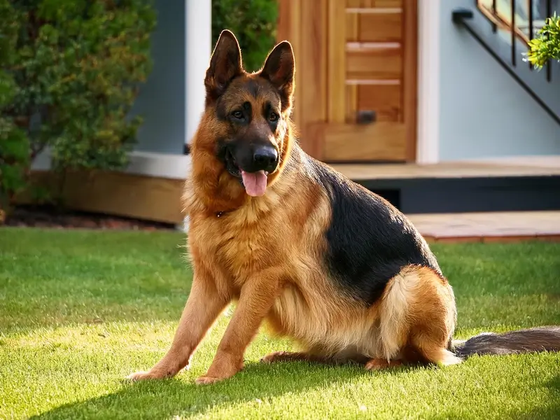
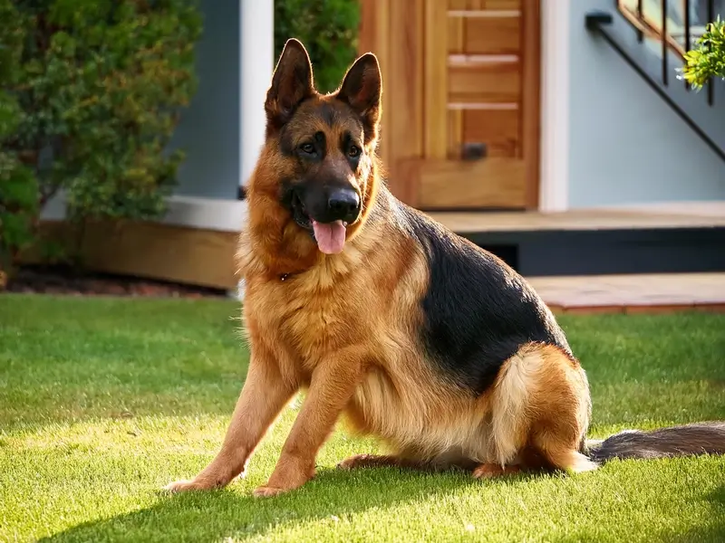

გერმანული ნაგაზის თვისებები
გერმანული ნაგაზი ერთ-ერთი ყველაზე ჭკვიანი და ერთგული ჯიშია. ხშირად გამოიყენება პოლიციაში და როგორც დაცვის ძაღლი.
დამატებითი ინფორმაცია
- წონა: 30-40 კგ
- საშუალო ასაკი: 10-13 წელი
- მშობლიური ქვეყანა: გერმანია
გერმანული ნაგაზი ერთ-ერთი ყველაზე ჭკვიანი და ერთგული ჯიშია. ხშირად გამოიყენება პოლიციაში და როგორც დაცვის ძაღლი.
